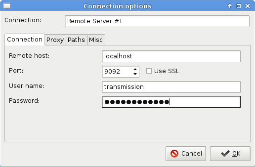
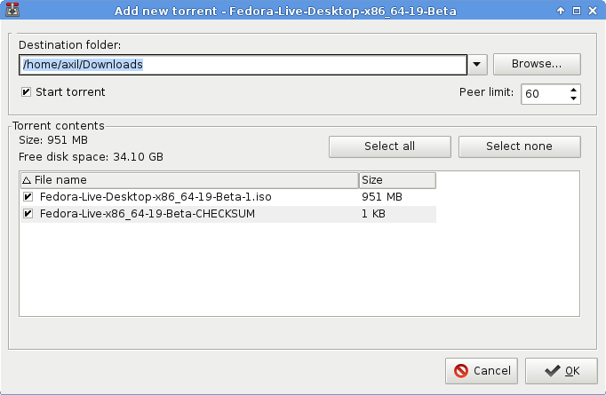
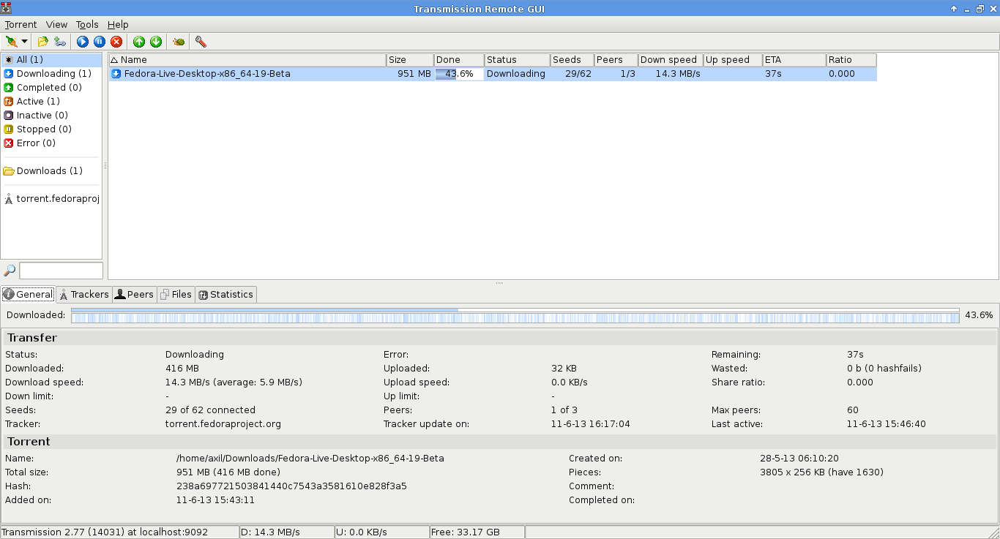

Connect to Transmission through an ssh encrypted session
by axilUse case: You have a remote machine with high bandwidth and you want to turn it in a torrent server.
Prerequisites
All you have to install in the remote server, is transmission-daemon which is
pretty much included in every well known distribution. After it successfuly installs,
run transmission-daemon as your user, no need for extra privileges. See the
man page for extra commands.
In the client side you will need Transmission Remote Gui (I will call it transgui from now on), a cool cross platform front-end to remotely control a Transmission Bit-Torrent client daemon via its RPC protocol. In Fedora you can install it from the official repos with:
yum install transgui
whereas in Archlinux you can find it in AUR. I suggest you go with the bin one which is a precompiled binary so that you avoid the building time.
Now, there is this little bash script which makes an ssh connection to you server, in order to link transgui with transmission-daemon:
#!/bin/bash RPORT=9091 LPORT=9092 ssh -C -c blowfish -f remotevm -L $LPORT:localhost:$RPORT -N if [ 'x'$1 == 'x' ]; then echo "Connection established" else echo "Connection failed" fi
Let's cut it down to pieces.
-Cis optional and it will compress all the data of the session. As the man page dictates, use it only on slow connections (client side).-c blowfishselects the cipher specification for encrypting the session, in this case blowfish.-frequests ssh to go to the background.remotevmis just an alias of the remote server I have at my~/.ssh/configin which I use an ssh key to connect to, without using a password.-L $LPORT:localhost:$RPORTspecifies that the given port on the local (client) host is to be forwarded to the given host on the remote side. Here I useRPORTfor the remote side andLPORTfor the local one. Note that 9091 is used by default from transmission as its bind port. All this is traversed through localhost, no external IPs.-Nmakes sure there isn't executed a remote command. This is useful for just forwarding ports.
Transgui
After you run the above script and see the Connection established message, it's time to open transgui and connect to the remote server. Make a new connection as it appears in the image below.

Default username:password is transmission. If you want to change it, either
pass it as a parameter when running transmission-daemon (see man page) or edit
$HOME/.config/transmission-daemon/settings.json with the daemon stopped.
Some more screens:
 The dialog that appears when you open a torrent file
 Main download page
Now all that remains is to retrieve the downloaded data. There are numerous ways
to do so, like using scp, rync, ftp, sftp, sshfs etc, each serving its
own purpose.